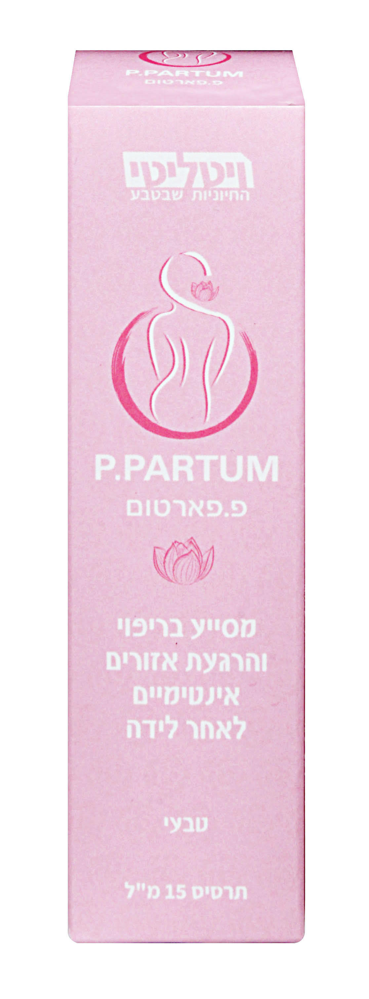

תרסיס טבעי המסייע להחלמה לאחר כל לידה, וכן במקרים של קרעים ותפרים.
לחצי כאן לקניההגנה · הרגעה · לחות
מנגנון הפעולה
יוצר מחסום פיזי מפני מזהמים ומגן על האיזור הרגיש בשלבי ההחלמה הראשונים.
מרכיבים טבעיים פועלים להרגעת העור ולהפחתת אי-נוחות ביום-יום.
תומך בתהליכי ריפוי הטבעיים של הגוף לאחר לידה, קרעים ותפרים.
יתרונות
כל מה שצריכה אחרי לידה, בבקבוק אחד קטן.
מאפשר לך להחלים בראש שקט ולהיות זמינה לאתגרים החדשים שמחכים לך.
מפחית כאבים וחוסר נוחות ומסייע לתהליך הריפוי הטבעי של הגוף.
מזרז את החזרה שלך לשגרה — כי חיים מחכים לך.
באישור משרד הבריאות (אמ"ר)
בשימוש בית החולים הילל יפה ולנאידו
עדויות
שאלות נפוצות
פשוט ונוח — יש להתיז על האזור פעמיים ביום (כ-3 לחיצות בכל פעם) למשך כ-7 ימים.
יש לבצע את ההתזה ממרחק של כ-10 ס"מ מהאזור.
לאחר השימוש מומלץ להשאיר את האזור מאוורר למשך כ-2 דקות. במידת הצורך ניתן לשים פד לאחר מכן.
יש לעיין בעלון לצרכן לפני השימוש.
ניתן להשיג ברשת סופר-פארם, בבתי מרקחת פרטיים, וברכישה אונליין מאתר ויטליטי.
ברקוד: 7290008905992 · מופץ על ידי דיפריס
פ.פארטום מכיל רכיבים צמחיים היוצרים שכבת הגנה המסייעת בזירוז ריפוי וכן מרגיעים את האזור.
Deionized Water · Refined Glycerin · Aloe Barbadensis Leaf Water · Golden Seal · Zinc Oxide · Symphytum Officinale Leaf Extract · Croton Lechleri · Cinnamomum Camphora Wood Oil · Chamomilla Recutita (Matricaria) Flower Extract · Myrtel Oil · Cupressus Sempervirens · Quercus Alba Extract (White Oak) · Potassium Sorbate · Sodium Benzoate
המוצר מכיל צמחים המסייעים בריפוי ובהרגעת האזור ולכן לא אמור לגרום לשריפה. יחד עם זאת, מכיוון שמדובר באזור רגיש, יתכן שבמצבים מסוימים תורגש רגישות קלה לאחר השימוש.
ניתן להשתמש במוצר כל עוד הוא בתוקף — ללא קשר למועד הפתיחה.
כן. כלל הרכיבים הפעילים של פ.פארטום הם על בסיס טבעי והמוצר מוגדר כ-Vegan Friendly.